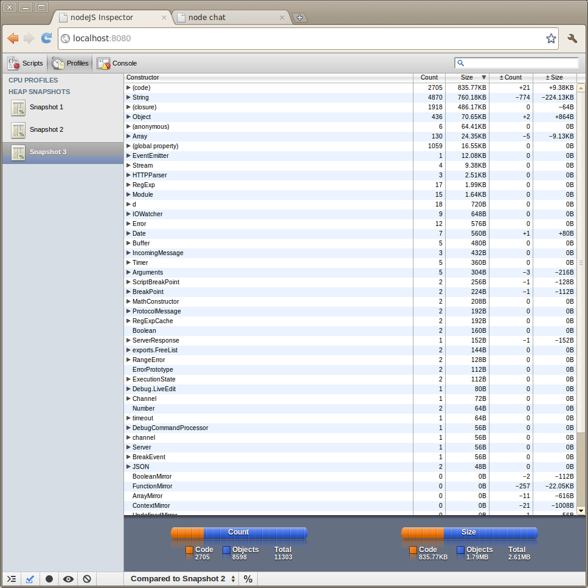
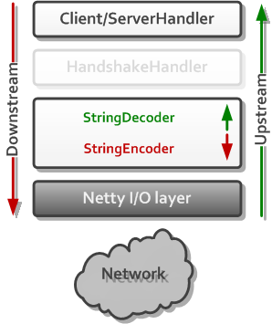

Netty vs. Node.js
Mike Heath
Tom Valletta
Why Netty vs. Node.js?
Netty
...asynchronous event-driven network application framework...
Node.js
Evented I/O for V8 JavaScript.
What does it mean to be event-driven?
Thread-per-connection Architecture
Thread-per-connection Architecture
- Each network connection is handled by its own thread
- Each thread has its own stack for maintaining state
- Apache, Tomcat, JBoss, WebSphere, WebLogic, etc.
Thread-per-connection Pseudo Code Echo Server
ServerSocket serverSocket = new ServerSocket(8080);
while (true) {
Socket socket = serverSocket.accept();
new Thread() {
byte[] buffer = socket.read();
socket.write(buffer);
}.start();
}
Event-driven Architecture
Event-driven Architecture
- More scalable alternative to thread-per-connection architecture
- Single thread handles multiple network connections
- Uses reactor pattern for demultiplexing
- Nginx, Twisted, EventMachine, Grizzly, Netty, Node.js, etc.
Event-driven Psuedo Code
ServerSocket serverSocket = new ServerSocket(8080);
Set<Socket> sockets = new Set();
sockets.add(serverSocket);
while (1) {
event = select(sockets);
if (event is connectionEvent) {
sockets.add(event.socket);
}
processEvent(event);
}
Event-driven Architecture Myths
- Thread scheduling and context switching are expensive
- Event-driven servers are always faster
- Threads don't really need 2MB of physical memory for their stack
- Thread-per-connection servers can't scale to 10,000+ connections
When to use an event-driven architecture?
- Front-end server that does mostly pass-through work
- Long-lived network connections that are often idle
- Web sockets
- Comet
Enough talk, let's fight
Node.js
- Set of libraries on top of V8 to do networking things -ry
- Almost no function in Node directly performs I/O, so the process never blocks.
- Node can do a lot of things at once
Node.js - Why JavaScript?
- JavaScript is non-blocking
- The web runs JavaScript
- Why not?
Node.js - Command Line
- process.pid
- process.platform
- process.versions
- process.memoryUsage()
Node Scripts
setTimeout(function() {
console.log("world");
}, 1000)
console.log("hello");
Classical Java Equivalent
try {
System.out.println("hello");
Thread.currentThread().sleep(1000);
System.out.println("world");
}
catch(InteruptedException ie) {
//If this thread was intrrupted by nother thread
}
Node Web Server
var http = require('http');
var s = http.createServer(function(req, res) {
res.writeHead(200, {'content-type': 'text/plain'});
res.end("hello world!");
});
s.listen(8000);
Node Chat Client
var net = require('net'), sockets = [];
var s = net.Server(function(socket) {
sockets.push(socket);
socket.on('data', function(d) {
for (var i = 0; i < sockets.length; i++) {
if (sockets[i] == socket) continue;
sockets[i].write(d);
}
});
socket.on('end', function() {
var i = sockets.indexOf(socket);
sockets.splice(i, 1);
});
});
s.listen(8089);
Node Inspector

Node Inspector
Modules
- npm
- socket.io
- express
- hundreds more
Modules Examples
- Templating: 45
- Build/Deployment: 31
- Message Queues: 5
- Testing Frameworks: 47
- Compression: 12
- I18n and L10n: 10
Documentation
- Good API Documentation
- 7 free node.js books
Netty
Netty History
- Started in 2003
- Migrated to Apache Software Foundation as Apache MINA
- Left Apache and moved to Red Hat/JBoss in 2008
Netty Architecture

Key Netty Features
- Unified event API for Sockets, UDP, SCTP, Infiniband
- Minimizes memory copies
- Fair read/write ratio
- Customizable thread model
Netty Pipeline

Netty Demo
Projects built on Netty
- Node.x (just had 0.1 release Monday, Oct. 10)
- Akka - Scala distributed actor based framework
- Netty Tools - Simplifies common tasks in Netty
- AsyncHttpClient - Written by Jean-Francois Arcand (creator of Grizzly)
- ADBCJ - Asynchronous Database Client
- Play - Scala based web framework
- PS3 Media Server